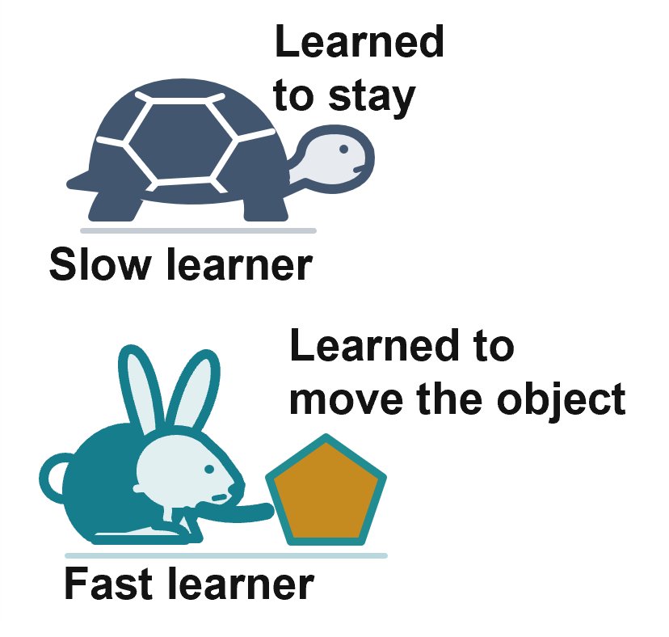
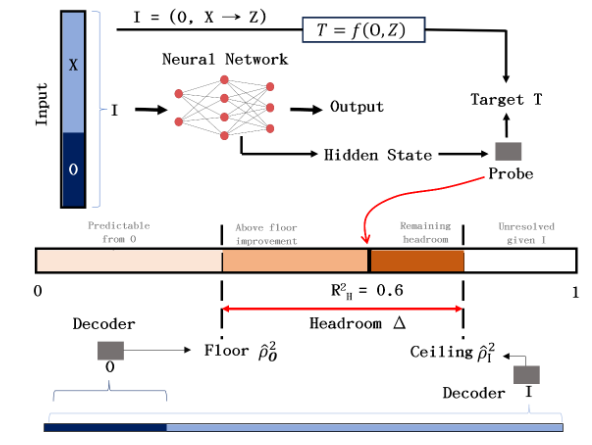
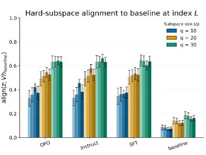

Relative Learning Rates Shape Compositional Computation Across
Spiking and Artificial Agents
Ongoing
With Christian Hoang · In submission to a workshop · Full
submission in preparation
We study how spiking (LIF) and conventional neural networks
(tanh) divide computation when learning to control an object
together under a shared reward. When learning rates differ
substantially, the slower agent learns to stay still while the
faster agent takes over the task. At equal learning rates, both
agents contribute and jointly represent the goal more
accurately, but this does not improve generalization.
Information also passes between agents through shared movement.
TL;DR: In a two-agent system, relative learning
rates determine who does the work, while shared representations
and information transfer do not necessarily imply better
generalization.

With Jacob Beck (Oracle) · In submission
Language models can sometimes give correct answers even when
parts of their input are missing, misspelled, or incorrect,
without being explicitly trained to handle such errors. We study
how this happens inside the models and find that information
from the damaged input is gradually processed and brought
together to produce an answer. We also show that early internal
activity can help predict when a model is likely to fail, even
before it generates an answer. Finally, training models on
moderately corrupted inputs makes them more reliable and changes
how they internally respond to errors.
TL;DR: We study when language models recover
from corrupted inputs and whether intermediate representations
predict recovery before the model produces its answer.
BibTeX for paper
@article{garg2026spontaneous,
author = {Garg, Pranjal and Beck, Jacob},
journal = {arXiv preprint arXiv:2609.35475},
year = {2026},
title = {Spontaneous {Context} {Restoration}: How {Language} {Models} {Recover} from {Corrupted} {Inputs}},
}

Independent research · In submission
Researchers often use linear probes on hidden representations to
find out what AI models know, but high scores can be misleading.
I proposed comparing these scores against what can already be
predicted from simple information (the floor) and what is
possible using all available information (the ceiling). I showed
that a model's score can drop simply because the data become
less informative, not because the model has learned less.
Applying this approach to language models, biological data,
chemistry data and neuroscience data reveals that some
impressive results reflect genuine additional information, while
others can largely be explained by simple clues.
TL;DR: A high score doesn't necessarily mean an
AI model has learned something meaningful. We need to compare it
against reference points.
BibTeX for paper
@article{garg2026high,
author = {Garg, Pranjal},
journal = {arXiv preprint arXiv:2610.08544},
year = {2026},
title = {How {High} {Is} 0.6? {Floors}, {Ceilings}, and {Headroom} in {Interpretability} {Probing}},
}

A*STAR Centre for Frontier AI Research · With Cheston Tan ·
Poster at the
CVPR 2026 A2A-MML Workshop
Can vision-language models (VLMs) understand the meaning of a
metaphor just by looking at a picture? For example, can they
connect an image of a black sheep to the idea of an outcast? We
introduce
MetaLex, a collection of around 500 metaphors, to test this ability
across 14 VLMs. We find that 11 of 14 models perform
significantly worse with images than with text, even when they
already know the metaphor's meaning. Turning images into written
descriptions sometimes helps, but surprisingly, adding images to
text can make the models perform worse.
TL;DR: VLMs often understand metaphors better
through text than pictures, showing that knowing something
doesn't mean they can recognize it equally well in different
forms.

Independent research · First Workshop on CogInterp
Why do some tasks require more effort from AI models than
others? I use ideas from control theory to study how information
moves through a language model and how difficult it is to change
its internal activity. I find that further RL training changes
these internal pathways, making previously easy directions
harder to reach and increasing the estimated effort.
Surprisingly, ordinary conversations appear harder than
mathematical problems under my measure, suggesting that AI
difficulty may differ from human intuition.
TL;DR: RL training changes how easily
information moves through AI models, and what seems easy to
humans may not be easy for AI.
BibTeX for workshop paper
@inproceedings{gargcontrol,
author = {Garg, Pranjal},
booktitle = {First {Workshop} on {CogInterp}: Interpreting {Cognition} in {Deep} {Learning} {Models}},
year = {2025},
title = {A {Control}-{Theoretic} {Account} of {Cognitive} {Effort} in {Language} {Models}},
}